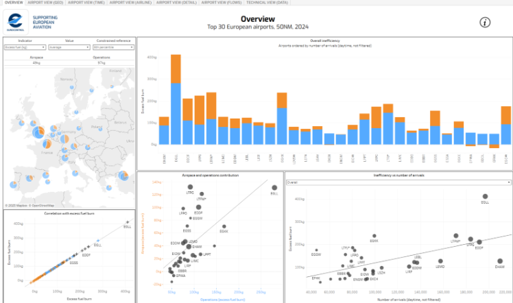

TMA Flight Efficiency Dashboard
An interactive tool for analyzing and improving flight operations in terminal areas.
Details Strategic / ManagementAn interactive tool for analyzing and improving flight operations in terminal areas.
Details Strategic / Management
A data analytics dashboard provided by EUROCONTROL, offering comprehensive insights into European air traffic management.
Details Strategic / Management
An interactive dashboard to support the Network manager Operational Performance Framework.
Details Strategic / Management
The Flight Level Adherence Interactive Reporting dashboard (FLair) provides users with flight level details to those flights that did not adhere to the filed (requested) flight level at some point during their route.
Details Strategic / Management
The NetZero pillar offers a user-friendly dashboard that enables monitoring and forecasting of emissions based on operational improvements, fleet renewal and traffic growth scenarios.
Details Strategic / ManagementIt is is designed to quickly and easily access emission information (CO2 and NOx emissions) during the landing and take-off phases of aircraft operations based on operational data instead of standardised ICAO LTO flight phase durations.
Details Strategic / ManagementThe Efficiency and Environment section of the Aviation Intelligence (AIU) Portal is a EUROCONTROL dashboard that provides data-driven insights into the efficiency and environmental impact of European aviation.
Details Operational / ExpertIt offers comprehensive reporting on performance indicators that are subject to targets or are monitored within the framework of the Single European Sky (SES) performance scheme.
Details Tactical / Planning